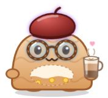
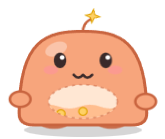
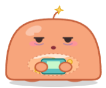
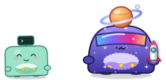
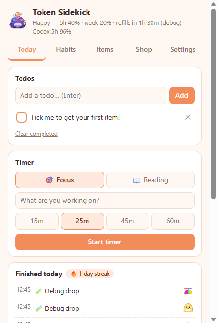
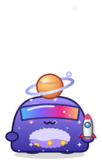
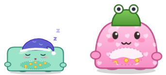
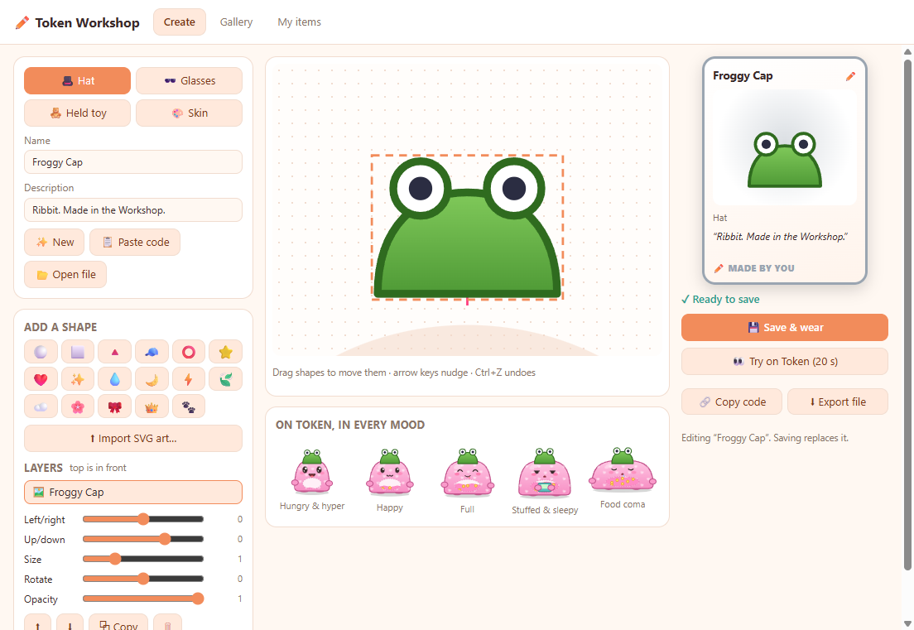

Meet Token, a round little blob that lives on your taskbar. Its belly fills up as you use Claude Code: hyper when you're fresh, snoring when you've hit your limit. It even taps along while Claude works.
Windows 10 & 11 · no account needed · updates itself · nothing leaves your PC



A glanceable usage meter, a tiny todo & habit app, and a dress-up game in one.
Your 5-hour and weekly Claude limits, shown as a belly, eye bags and a night cap. It pops back when your window refills.
Token taps a tiny keyboard on every tool call, cheers when Claude finishes, and waves when it needs you.

Use Codex CLI too? Cody, a mint cube with a >_ screen, tracks its limits right next
to Token.

Drink water, stretch, focus timers, reading sessions. Finish things and Token gets a surprise drop.

Hats, glasses, toys and skins from common to legendary, with rare shinies and set bonuses.

Design items in the Workshop from shapes and stickers, or import your own SVG art, then share them with a code.

Your Token, your style.
Free during the beta, premium packs included.
Token runs on your PC and minds its own business.
It reads only the usage numbers Claude Code already puts in its status line, plus tool names from hooks. Never your prompts, replies or files.
The beta has no account and no telemetry. Its only network call is checking GitHub for updates.
Connecting backs up your Claude settings first, and Disconnect removes exactly what it added.
Yes. During the beta everything is free, including the premium packs. Claim them in the Shop and they're yours to keep.
Windows only for now. Tell us if you want another platform, since that decides what comes next.
Claude Code with a Pro or Max plan (API-key users don't get rate limits, so Token just hangs out). Codex CLI is detected automatically. More agents are planned.
The warning only means the installer isn't signed with a paid certificate yet. The app runs in Electron's sandbox, blocks remote pages and links, and updates only from our GitHub releases. Security issues can be reported privately; see our security policy.
Settings → Disconnect first (it restores your Claude settings), then remove it from Windows' Installed apps.
It's a beta, so your feedback decides what we build next.